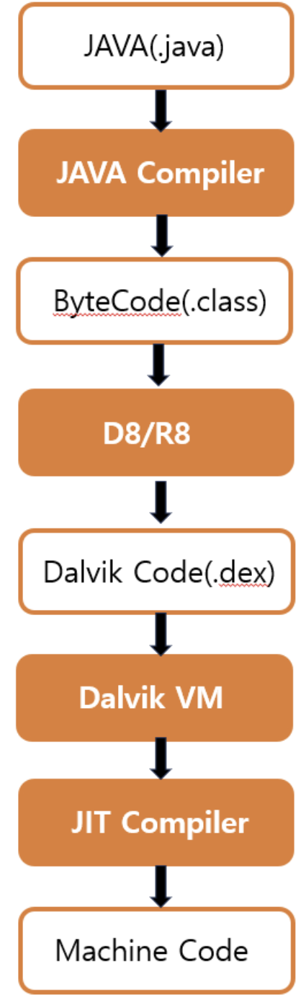

이번 주차에는 JNI 와 Dalvik 에 대해서 공부하였다.
JNI
Android 애플리케이션은 주로 Java, Kotlin 으로 작성된다.
그러나 성능 최적화, C/C++ 라이브러리 재사용, 하드웨어 제어 등의 이유로 네이티브 코드를 사용해야 하는 경우가 있다.
이런 경우를 위해 JNI(Java Native Interface) 가 존재한다.
JNI 는 Java 코드에서 네이티브 코드를 호출하거나,
네이티브 코드에서 Java 코드를 호출할 수 있도록 하는 인터페이스이다.
Android 에서는 JNI 를 라이브러리 재사용을 포함하여
미디어 처리, 머신 러닝, 암호화 및 보안에 사용하고 있다.
// JNI 예시 Java 코드
public class ExampleJNI {
static {
System.loadLibrary("Hello_JNI");
}
private native int getNumber();
private native void printHelloWorld();
public static void main(String[] args){
JNI jni = new JNI();
jni.printHelloWorld(); //JNI로 호출 한 HelloWorld
System.out.println(jni.getNumber()); //JNI로 호출 한 숫자 메서드
}
}다음은 JNI 를 사용한 Java 코드이다.
이 코드로 JNI 를 사용하기 위해서 어떻게 해야 하는지 설명하겠다.
먼저 C언어 바이너리 파일명을 적어야 한다.
확장자는 필요 없고, 절대 / 상대 경로를 적으면 된다.
이 코드에서 사용된 바이너리 파일은 System.loadLibrary() 안에 있는 Hello_JNI.c 이다.
static {
System.loadLibrary("Hello_JNI");
}
다음으로 사용할 네이티브 함수 명을 선언해야 한다.
native 라는 키워드를 사용해야 하고 바이너리 파일 내에 적힌 함수명과 동일한 이름이어야 한다.
private native int getNumber();
private native void printHelloWorld();즉, 이 코드에 있는 getNumber(), printHelloWorld() 가 바이너리 파일 내에도 있다는 뜻이다.
또한 JNI 객체를 생성해야 한다.
native 메소드를 만들고, static 블록으로 System.loadLibrary 를 한 클래스를 객체화 하면 된다.
이제 생성한 JNI 객체 변수를 사용하여 해당 네이티브 함수를 사용하면 끝이다.
Dalvik
Dalvik 은 Java 언어로 작성된 코드를 실행하기 위해 개발된 가상 머신이다.
그 전에, Dalvik 을 알기 위해서는 DEX 파일에 대한 내용을 아는 것이 좋다.
그래서 DEX 파일에 대해서 먼저 설명하도록 하겠다.
DEX
2주차에서 배운 APK 생성 과정을 다시 한 번 읽어보겠다.
https://sec-ret.tistory.com/4#classes.dex-1-5
[모바일 애플리케이션 분석] 2주차 - APK 구조, Android 컴포넌트
이번 주차에는 Kotlin 에 이어서APK 구조와 Android 컴포넌트에 대해서 알아보겠다.APKAPK(Android Application Package) 는 안드로이드 애플리케이션을 위한 패키지 파일 형식이다.안드로이드에서 앱을 설치
sec-ret.tistory.com
패키징 과정 중 *.class 파일을 가상 머신 달빅(Dalvik) 이 인식할 수 있도록 *.dex 파일로 변환한다.
여기서 말한 *.dex 파일이 바로 DEX(Dalvik Executable) 파일로,
자바 바이트코드(*.class)를 Dalvik 이나 ART 에서 실행할 수 있는 형태로 변환한 것이다.
DEX 파일은 안드로이드 환경에서 동작되도록 최적화되어 있다.
Dalvik
다시 Dalvik 으로 돌아와서 설명하겠다.

Java 컴파일러를 통해 만들어진 *.class 파일을
D8 빌드 도구를 사용하여 *.dex 파일로 바꾸는 것이다.
그후 Dalvik 가상 머신 안에 있는 JIT 컴파일러로 *.dex 파일을 기계어로 변환한다.
ART
Android 에서 Dalvik 을 사용하면서 발생한 문제가 하나 있다.
JIT 컴파일러를 사용하여 발생한 상당한 부하로, 이는 배터리 시간 저하를 초래한다.
이러한 문제를 해결하기 위해 ART(Android Runtime) 이 도입되었고, Dalvik 을 대체하게 된다.
ART 는 AOT 라는 컴파일러를 사용하고, 이 컴파일러는 실행 전에 바이트 코드를 기계어로 변환한다.
하지만 JIT 컴파일러를 사용하지 않는 것은 아니다.
자주 사용하는 코드는 AOT 로, 나머지 코드는 JIT 를 사용하는 방식으로 작동한다.
후기
2주차에서 왜 *.class 파일을 *.dex 파일로 바꾸는지 궁금하였는데
이번 공부를 통해 그 이유가 Dalvik 을 사용하여 최적화를 하기 위한 것이라고 배웠다.
그리고 ART 를 보면 JIT 컴파일러도 같이 사용하고 있다.
이처럼 어떠한 프로그램에 문제가 발생한 경우,
그 프로그램 안에 있는 것 중 사용할 수 있는 것이 무엇인지 파악하는 능력이 필요하다는 생각이 든다.